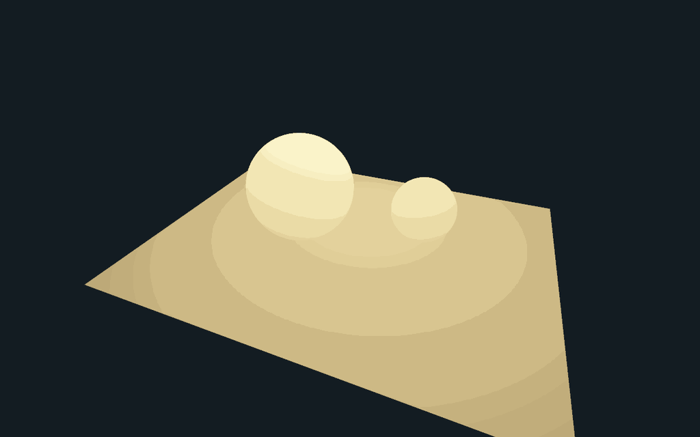
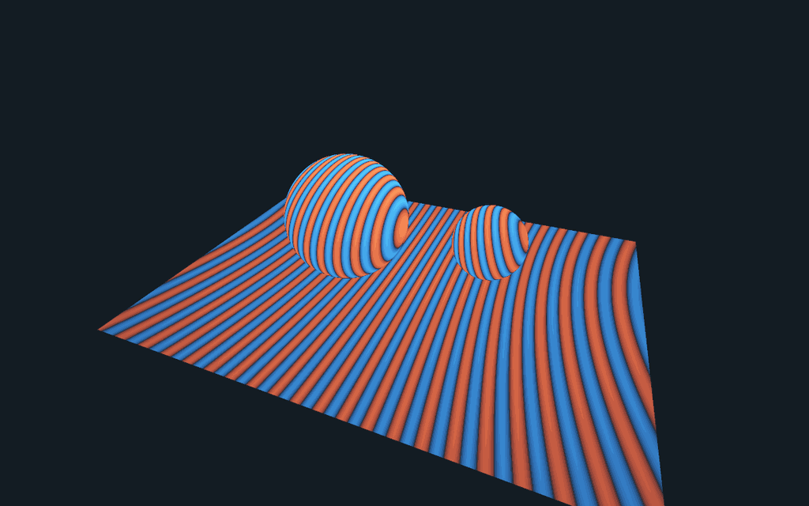
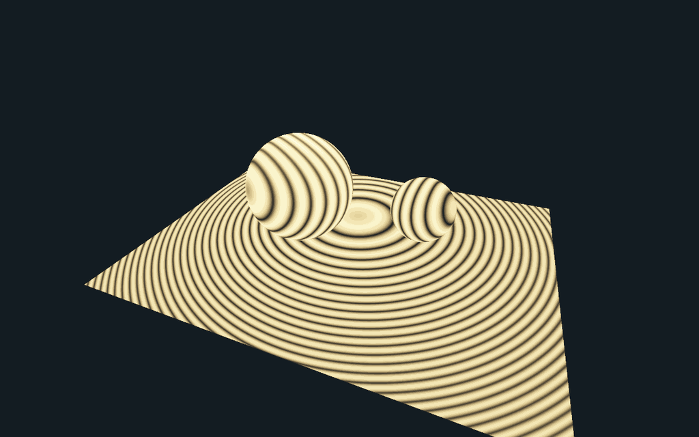

Open View → Optics & primitive laboratory → Coherent receiver render. The experiment starts with two spherical optical waves and a floor with two curved receivers. The images are native C++ renders: each camera sample intersects that geometry, evaluates the complex field at the intersection, and integrates intensity over the film pixel. No stripe texture is used.
What changes when the fields are coherent?
Each point source contributes the scalar Helmholtz field
The optional tilted reference is a plane wave instead. The detector compares
Move the relative phase: coherent fringes translate, while the incoherent image is unchanged. Switch to the signed cross term to see constructive and destructive contributions in red and blue. Set reference amplitude to zero: the interference term vanishes. The same formulas are evaluated on the curved receivers, so their fringe geometry comes from physical path-length differences rather than a fixed screen-space pattern.
The bench uses one geometry unit per 10 micrometres, a 48-micrometre-wide floor, and a default wavelength of 0.532 micrometres. Images show relative intensity in a warm palette; that palette is not a spectral colour calculation. The UI integrates 2 × 2 samples per pixel at 800 × 500; exports produce 1200 × 750 PNGs plus signed, linear detector values and capture settings.
Why the surface-splat screenshot is suggestive, but different
PP33's finite-curve display paints a finite selection of cone or plane sheets. Regularly spaced angular samples can leave visible bands on the receivers. Those bands can resemble optical fringes, but their spacing and phase are not derived from a complex optical field. They are sampling structure.
A useful research connection is equal optical-path difference: the level
sets of arg(O) − arg(R) intersect a receiver in curves. A surface-curve
representation could integrate or rasterize those oscillatory contributions,
provided it carries amplitude, optical phase, a valid measure and pixel
integration. This is a candidate use of the geometry infrastructure, not a
claim that the existing incoherent PP33 estimator already computes holography.
There is another statistical subtlety: squaring a noisy amplitude estimate does not generally give an unbiased intensity estimate.
Two independent unbiased field estimates can instead estimate intensity by the real part of their cross product, although individual values may be negative and variance can be high. The present microbench sums its known fields directly and therefore does not introduce that Monte Carlo squaring bias. Finite pixel quadrature still has discretization error.
Deliberate scope
The receivers are ideal non-perturbing field probes: their geometry determines where the field is measured, and camera visibility selects the visible probe. They do not block or re-scatter the optical field. This is not a wave BSDF, multiple-scattering material solver, polarization solver, or coherent extension of every RadianceLab integrator. Large phase gradients can alias; the scalar and sampled-field assumptions remain visible in the interface. The original aperture/FFT wave laboratory is retained beside this experiment.
Checks and rendered evidence
PrismCoherentReceiverTest verifies equal-path constructive/destructive
interference, inverse-square magnitude, phase invariance of incoherent energy,
2π periodicity, the signed cross-term identity, phase-averaged incoherence,
and preservation of the identity after pixel integration. 16,612 checks
pass including the four native image exports. The image generation uses the
same math as the interactive native tab.




Background: TU Delft's scalar diffraction notes explain the scalar field and propagation assumptions. The local receiver experiment is a direct superposition benchmark, not an implementation of an unreferenced general wave-rendering algorithm.